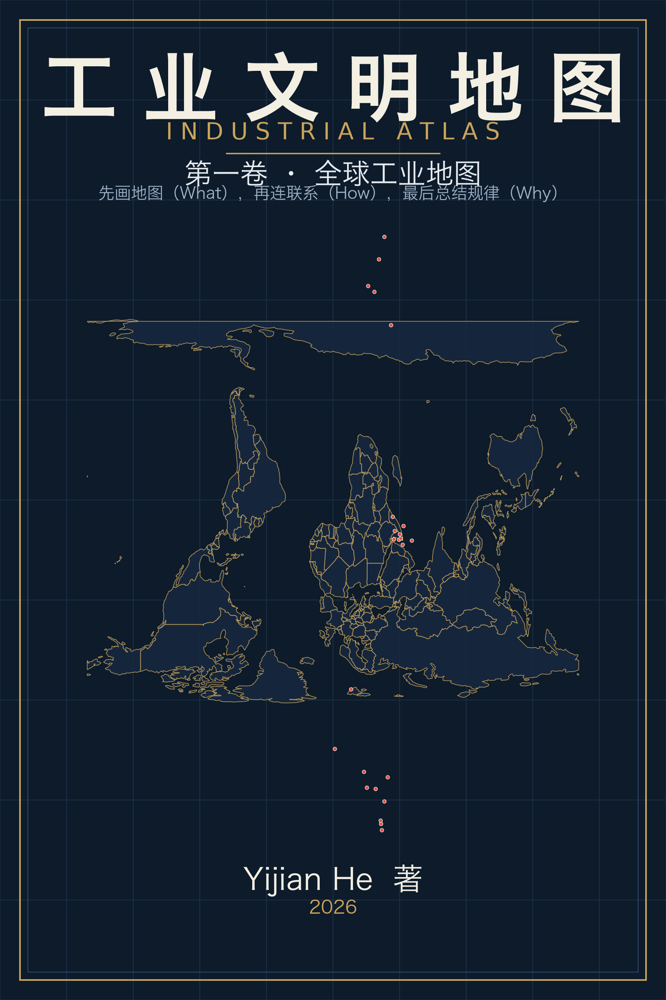

工业文明地图
一本查得到、连得起来、经得起更新的工业世界地图集。先画地图（What），再连联系（How），最后总结规律（Why）。
作者：Yijian He · © 2026 · 许可：CC BY-NC-ND 4.0（可转载完整版本并须署名；不可商用；不可修改）。
怎么读这本书
- 从序言开始，建立“地图优先”的阅读原则；
- 按章节顺序通读第一卷，建立全球工业骨架；
- 第二卷放大中国，第三卷看联系，第四卷总结规律，第五卷看向 AI 时代；
- 以后把这本书当字典：查产品、企业、城市、产业集群，一分钟定位。